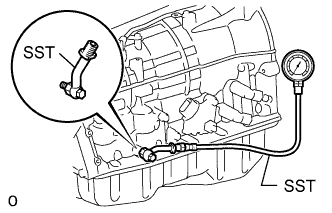

AUTOMATIC TRANSMISSION SYSTEM > HYDRAULIC TEST |
| PERFORM HYDRAULIC TEST |
Measure the line pressure.
Warm up the ATF (Automatic Transmission Fluid).
Turn the engine switch off.
Lift the vehicle up.
|  |
Remove the test plug from the transmission case and connect SST.
Lower the vehicle.
Fully apply the parking brake and chock the 4 wheels.
Start the engine and check the idling speed.
Keep your left foot pressed firmly on the brake pedal and move the shift lever to D.
Measure the line pressure when the engine is idling.
Fully depress the accelerator pedal with your right foot. Quickly read the highest line pressure when the engine speed reaches the stall speed.
In the same manner, perform the test with the shift lever in R.
| Condition | D Position | R Position |
| Stall speed | 1350 to 1550 kPa (13.8 to 15.8 kgf/cm2, 196 to 225 psi) | 1250 to 1550 kPa (12.7 to 15.8 kgf/cm2, 181 to 225 psi) |
| Problem | Possible Cause |
| Measured values at both positions are higher than specified pressure |
|
| Measured values at both positions are below specified pressure |
|
| Pressure is low in D only |
|
| Pressure is low in R only |
|